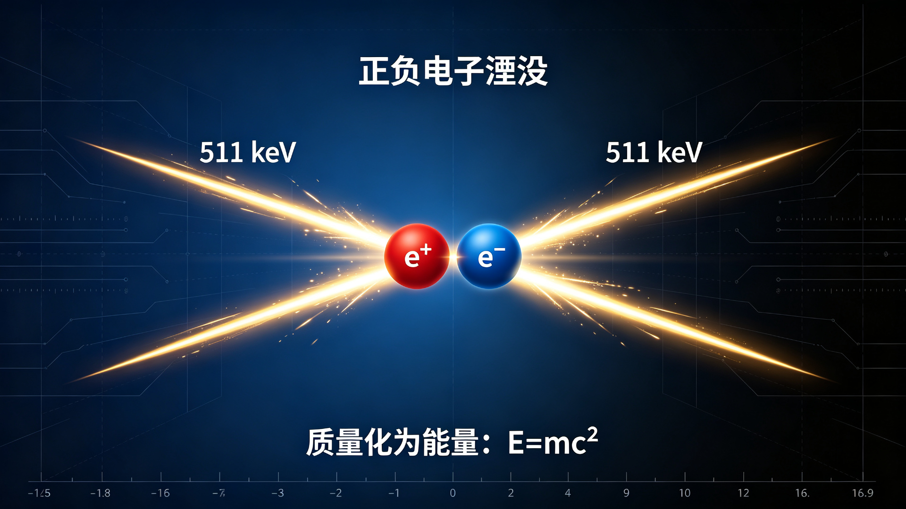
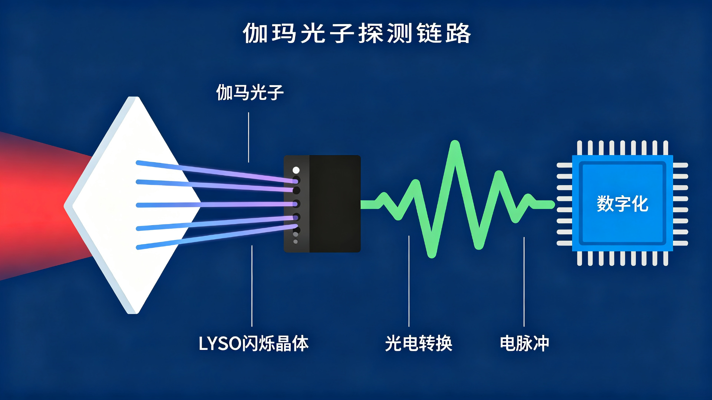
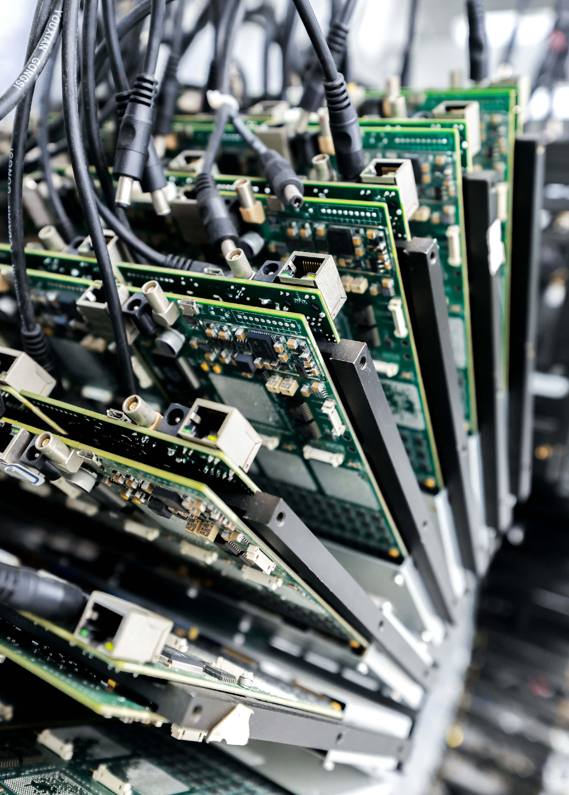

Do You Believe in Light?
1. The Light of Physics: When Matter Vanishes, Light Is Born
In 1928, Dirac wrote down an equation describing the electron. The equation itself was elegant, yet it harbored a 'ghost' that disturbed physicists: it predicted a particle with the same mass as the electron but opposite charge, as if matter had to appear in pairs. No one had ever seen such a particle, and the prediction was set aside for four years. In 1932, Anderson saw a deflected track in a cloud-chamber photograph; the positron had been found, and Dirac's ghost finally had a body.
Years later, physicists understood how the story ends. When a positron meets an electron, they annihilate each other, converting all their mass into energy. By E=mc², the mass of two stationary particles corresponds to 1.022 MeV; by conservation of momentum, this energy must split into two equal beams, traveling in exactly opposite directions. Every annihilation thus produces two 511 keV gamma photons, racing apart along a single line.

This is the most thorough farewell in the universe, and the purest light. Matter vanishes, and light is born. Yet this light is invisible to the eye, and hard to record directly. 511 keV gamma rays are deeply penetrating; conventional optical lenses and film are nearly blind to them. It needs a ladder of conversion: first it becomes a faint flash of visible light inside a scintillation crystal, then an electron stream through the photoelectric effect, and finally a string of precise numbers in a multi-voltage threshold sampling circuit. It took physics nearly a century to let this 'most invisible light' be seen clearly by humans.

What PET images is exactly this light. A trace amount of positron-emitting tracer is injected into the body; it accumulates with blood flow and metabolism in target tissue; the positron travels a short distance before annihilating with an electron, releasing that pair of 511 keV photons; the coincident signals on the detector ring piece together the coordinates where annihilation occurred. The map of life's metabolism is drawn on the tracks of this light.
2. The Light of Research: Building Molecular Coordinates for Life
Seeing metabolism is not yet understanding life. A static uptake image only tells where the tracer accumulates; it cannot say how it arrived, how long it stayed, or how it left. Scientific research asks more of PET: observing rare targets at low dose, capturing molecular transport and exchange with high temporal resolution, imaging in natural states to reduce the artifacts of anesthesia and restraint, and an open architecture that lets new algorithms actually enter the instrument. A beautiful image, if it cannot be repeated, quantified, or tied to a falsifiable hypothesis, is still only an image, not evidence.
Conventional analog PET amplifies, shapes, discriminates, and compresses the signal before it ever reaches the computer. The details that are discarded are often exactly what researchers later wish to revisit. All-digital PET returns the control of imaging information to the researcher: under the multi-voltage threshold (MVT) sampling method, the time, energy, and position of every annihilation event are digitized completely at the source, and the raw data is preserved, traceable, and reprocessable. Researchers can reinterpret the same data with different algorithms, distinguish random error from systematic bias in phantom experiments, and treat kinetic models as hypotheses to be tested rather than settled conclusions.

This light therefore illuminates a wider terrain. In oncology, all-digital PET helps doctors detect metabolic abnormalities earlier and more quantitatively; in neuroscience, dedicated brain PET brings the detector close to the head, offering a targeted platform for receptor and amyloid studies; in drug discovery, small-animal PET allows the same animal to be observed longitudinally, reducing individual variation; in proton therapy, in-beam PET uses positron-emitting nuclei produced by the beam to verify range in real time. Innovative systems such as Digital PET 2.0 turn 'from photons to the picture of life' from a slogan into real, running instruments.
Further frontiers lie ahead: mapping the dynamic molecular network among human organs, studying brain-body coupling under natural behavior, accelerating new tracers and drugs from target to human, revealing the dynamics of plant carbon allocation and stress response, and building cross-scale, cross-modality digital-twin experiments. All-digital PET is turning 'seeing' into credible scientific discovery.
3. The Light of the Laboratory: Reinventing PET from the Ground Up
In 2004, the Digital PET Laboratory was founded. From its first day, it chose a path few others walked: instead of refining the analog signal chain of conventional PET, reinvent PET from the bottom up. The mainstream approach was to optimize circuits and algorithms within the existing architecture, but the Laboratory posed a more fundamental question: if every annihilation event were recorded digitally at its source, what would PET become?
The multi-voltage threshold (MVT) sampling method answered this question. Rather than asking 'how high is the voltage right now' on a uniform clock, it records 'when does the pulse cross this height' at several voltage thresholds, then fits arrival time, amplitude, and energy using a pulse model. Hardware shifts from complex analog processing to comparators, time-to-digital converters, and programmable logic; the algorithm takes on greater interpretive responsibility. The scintillation pulse is digitized precisely at the source, and every annihilation event becomes rows of time and energy records, with raw information no longer lost in transmission.

Over two decades, the Laboratory has grown this approach into a complete system. High-sensitivity detection, ultrahigh temporal resolution, and dynamic quantitative imaging reinforce one another; the philosophy of 'minimal hardware, maximal software' frees algorithmic space; and modular design lets the system grow around different research objects, moving from general-purpose scanners toward disease-, organ-, and experiment-specific platforms. The detector is no longer a fixed ring built around the human body, but a set of blocks that can be rearranged by scientific questions: a plant can be observed lying down, a proton beam in treatment can be seen in real time, and a brain researcher can place the detector within a few centimeters of the skull.
The Laboratory's development has always kept pace with national strategic priorities, key industrial bottlenecks, and major public health challenges. A full-chain innovation system spanning basic research, technology, clinical translation, and industrial application has been its unchanged roadmap. This light was lit in 2004, crossed the scientific frontier, shone into instruments, and reached the eyes of those who came after.
4. The Light of the Team: A Group of People Who Together Build the All-Digital PET
An all-digital PET is not just an instrument; it is a group of people. The team grew from a shared commitment to long-term scientific questions. Xie Qingguo, working from first principles, sustains the full chain from physics, circuits, and algorithms to clinical translation, returning every directional choice to the origin question: what is the physical event, after all? Xiao Peng achieves reliable imaging from incomplete data and novel geometries, turning 'insufficient information' from a defect into a resource. Nicola D'Ascenzo and Valeri Saveliev bring international particle-detection experience, carrying different measurement traditions and questions.
Downstream in the chain, Wan Lin turns hardware capability into a growing software platform, letting the data from the detector actually flow; Zheng Rui, Xi Daoming, and Li Bingxuan extend the depth of materials, detection, electronics, and systems; and Zhang Bo, Chen Fang, and the industrial engineering team move the system from 'can image' to 'can deliver,' finding engineering solutions among manufacturing, reliability, and regulation. People who grow crystals, build circuits, write algorithms, and work with clinicians meet at the same instrument.

The culture gives young researchers real autonomy, while requiring every judgment to pass common scrutiny. Proof of principle helps small teams quickly rule out wrong paths; module integration emphasizes interface synergy over single-point performance; full-system integration makes local errors visible in a shared coordinate frame; and application validation gives external partners genuine evaluative authority. Every technical milestone drives the team's structure forward: from method to detector, from detector to animal PET, from scientific instrument to clinical system, from project-based to platform-based organization.
Graduate students and young researchers make every technical interface truly work, and in doing so grow into the next generation. The Laboratory believes one thing: doing is the fastest way to understand the world. From assembling detector rings to debugging imaging algorithms, from designing circuits to writing reports, every step is open to students. The all-digital PET is, in the end, built together by these people.
5. The Light of Collaboration: One Beam Alone Does Not Make the Day
One beam alone does not make the day. Every breakthrough of the Digital PET Laboratory rests on cross-institutional collaboration. Students enter hospitals, bridging engineering metrics and clinical language, so that engineers hear firsthand how doctors describe 'not seeing clearly'; Huazhong University of Science and Technology works with the Suzhou industrial team to move animal all-digital PET toward products, where performance, interfaces, manufacturability, and maintainability must all pass inspection at the detector module.

Ezhou connects principle innovation to the clinical instrument supply chain, giving the Laboratory's prototypes a path to patients; Guangzhou clinical trials turn 'seeing' into evidence of safety and efficacy, linking system performance, patient workflow, image interpretation, quality control, and regulatory evidence; cooperation with the University of Science and Technology of China and Zhongke Ion allows proton beams to be observed in real time, connecting particle detection, treatment physics, and medical imaging.
The Italian NEUROMED and international talent extend collaboration from scientific installation to international clinical service. The goal of international collaboration is not to enlarge a list, but to build a lasting shared research capacity from equipment, data, disciplines, and talent across institutions. During the pandemic, the team and its partners shared public responsibility, testing the resilience of this network.
High-quality collaboration is not enthusiasm piled up, but institutions that endure. Write the problem clearly before speaking of resources; define shared milestones and 'exit conditions'; put data governance before the first acquisition; give clinical, engineering, and data people genuine authorship; and build talent development into every project. These principles turn one-off projects into lasting communities. Tomorrow's frontier questions demand even deeper global collaboration: whole-body dynamic PET and systems biology, brain-body coupling in natural behavior, online monitoring for proton and heavy-ion therapy, new radiopharmaceuticals and theranostics, and open data, open-source software, and reproducible benchmarks. No single team can answer these questions alone. Light travels farther only when people illuminate one another.
6. The Light for the Young: UPOP, the Laboratory's Gift to Those Who Believe in Light
From the light of physics to the light of research, from the light of the Laboratory to the light of teams and collaboration, this chain must finally be handed to the new generation. The Undergraduate Practice Opportunities Program (UPOP) is a co-curricular professional development program exclusively for sophomores at the Digital PET Laboratory, and the first beam of light the Laboratory offers to young believers in light. Its goal is simple and clear: to help students find, secure, and thrive in their first professional experience, whether in industry, research, or academia.
UPOP offers a complete growth path:
- One-on-one advising: regular meetings with UPOP staff to plan career paths;
- Seven milestone workshops: starting from resumes, cover letters, and professional connections, advancing to project management, professional communication, and personal skills;
- Team Training Workshops (TTW): multi-day experiential learning focused on teamwork, communication, and problem solving;
- The UPOP mentor network: mentors from various fields share their career experience;
- The UPOP employer network: exclusive internship and career opportunities for UPOP students;
- Lifetime access to UPOP resources: program resources remain open to alumni.
By the end of UPOP, students are able to craft personalized resumes and persuasive cover letters, present themselves confidently in interviews and social settings, execute a targeted summer experience, lead structured projects in teams, and translate teamwork into problem-solving ability.

Student testimonials confirm the value of this path: some gained a complete map of abilities, 'from negotiation skills to the unwritten rules of the workplace'; some learned to express themselves better in one-on-one mentor meetings; others called UPOP 'an extraordinary opportunity that many of us rarely get in our careers.'
The UPOP year consists of three separate courses: EPE fall semester (with four milestone workshops), EPW (including the Team Training Workshop), and EPE spring semester (with three milestone workshops); once registered, the Laboratory provides all course information. For any questions, students may contact petlab@hust.edu.cn at any time, and the UPOP team is glad to help; the office in Room 401 is always open for a visit, for snacks, coffee, or tea, or to reserve a room for interviews and meetings.
An Invitation to the Light
Young one, do you believe in light?
This light set out from Dirac's equation in 1928, passed through cloud-chamber tracks, the faint glow of scintillation crystals, the signals of detector rings, and the pulses of all-digital circuits, through more than two decades of scientific frontier, into instruments, into the collaboration of a group, and into one clinical scene after another. Now, it has arrived in front of this screen.
The Laboratory looks forward to exploring, inventing, innovating, and creating together with partners around the world. Whether you apply to UPOP, join a research team, or are simply curious about light, the Laboratory's door is open. That beam of light will not disappoint those who believe in it.